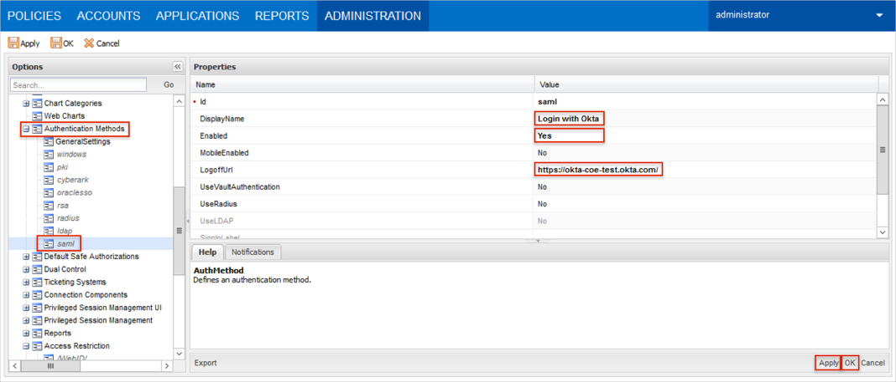

Open the c:\inetpub\wwwroot\PasswordVault\web.config file from the server hosting the CyberArk Password Vault Web Access (PVWA).
Search for the <appSettings> section.
Add the following lines:
<add key="IdentityProviderLoginURL" value="<value1>" />
For <value1>, copy and paste the following:
Sign into the Okta Admin Dashboard to generate this variable.
<add key="IdentityProviderCertificate"value="<value2>" />
For <value2>, copy and paste the following (x509 cert in text format):
Sign into the Okta Admin Dashboard to generate this variable.
<add key="Issuer" value="PasswordVault" />
Save the web.config file.
Restart Internet Information Services (IIS).
Login to CyberArk PVWA as an administrator.
Navigate to Administration > Options > Access Restrictions.
Add a new AllowedReferrer. Use the following value for the BaseUrl:
Sign into the Okta Admin Dashboard to generate this variable.
Click Apply.
Select Authentication Methods > saml.
Display Name: Enter Login with Okta.
Enabled: Set to Yes.
LoggoffUrl: Copy and paste the following:
Sign into the Okta Admin Dashboard to generate this variable.
Click Apply.
Click OK.

Done!
Notes:
IDP-initiated flows and SP-initiated flows are supported.
Just In Time (JIT) provisioning is not supported.
Open your CyberArk PVWA Login URL: [yourBaseUrl]/PasswordVault/.
Click Login with Okta.